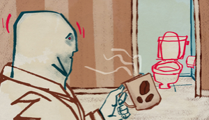
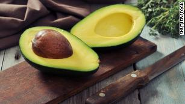
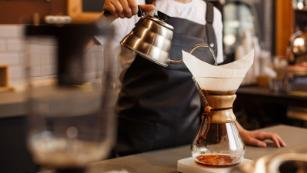

(CNN)The earthy, caffeine-infused coffee drink may hold more power than waking you up in the morning.
Drinking either sweetened or unsweetened coffee is associated with a lower death risk compared with not drinking the beverage, according to a new study published in the journal Annals of Internal Medicine.
Researchers surveyed 171,616 participants in the United Kingdom up to five times over the course of a year about their lifestyle, including their coffee-drinking habits. The scientists then looked up death certificates to see who had passed away an average of seven years later.
The participants ranged in age from 37 to 73 years old and reported they had no cardiovascular disease or cancer at the time of the survey.
Results showed that for people who drank a moderate amount of coffee, defined as 1.5 to 3.5 cups a day, those who sweetened their coffee had about a 30% lower death risk compared with non-coffee drinkers, according to Dr. Christina Wee, associate professor of medicine at Harvard Medical School, who was not involved in the study. She is also deputy editor of the Annals of Internal Medicine.
Unsweetened coffee drinkers had between 16% and 29% lower death risk compared with non-coffee drinkers, she added.
The findings were adjusted for sociodemographic, lifestyle and clinical factors to eliminate their effects on the results. For example, the research team asked questions about smoking level, amount of physical activity, education level and dietary habits, Wee said.
There is a limit to the researchers' adjustments because they didn't ask about other factors that could affect the results like income level and occupation, she said.
If you drink sugar-laden lattes and caramel macchiatos, you're out of luck.
The average coffee drinker who reported they sweeten their coffee put in an average of 1 teaspoon, according to the study.
"If you';re only adding about 1 teaspoon of sugar to your coffee, the benefits of coffee that we think are there aren't completely negated by that 1 teaspoon," Wee said.
The results for people who used artificial sweetener in their coffee were less clear, so the researchers were not able to draw any conclusions for people who prefer sugar substitutes.
"Based on this study, clinicians can tell their patients that there is no need for most coffee drinkers to eliminate the beverage from their diet but to be cautious about higher calorie specialty coffees," lead study author Dr. Dan Liu in an email. She is from the department of epidemiology at Southern Medical University in Guangzhou, China.
Previous research has shown that coffee intake could protect the heart and aid in treating other diseases, Liu said. It may also reduce the risk of liver problems, a 2021 study said.
Coffee also has different health profiles, depending on how it's produced, said Gunter Kuhnle, professor of nutrition and food science at the University of Reading in the United Kingdom. He was not involved in the study.
Some types contain phenolic compounds, which are believed to be beneficial, he said.
Those chemical compounds affect the flavor and aroma of the coffee and are valuable because they can act as antioxidants and have anti-inflammatory and anti-aging properties.
The two most common coffee species are arabica and robusta, and research shows robusta coffee has a higher phenolic content than arabica coffee.
Unroasted, green coffee beans contain high levels of phenolic compounds, but the poor aroma when they are brewed causes people to roast them. Depending on the roasting level, some of the phenolic compounds can break down.
And depending on how you brew it, coffee can contain high levels of diterpenes, which are chemical compounds that can increase your risk of cardiovascular disease, Kuhnle said.
Boiled coffee and French press coffee contain some of the highest amounts of diterpenes, according to a 2016 study.
Mocha and espresso coffee contained a moderate amount of diterpenes while instant coffees or coffees made with filtration had the least.